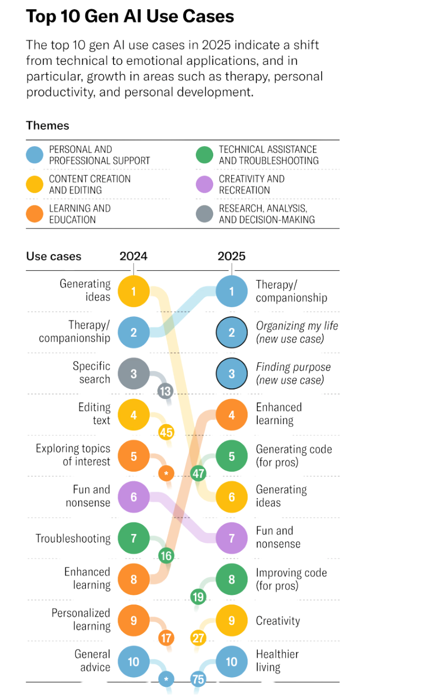

Where do LLMs fall short in CBT‑guided reasoning?
Despite broad CBT knowledge, LLMs lack the structured reasoning therapy requires. We introduce a clinically grounded reasoning framework and a metric to measure whether that guidance actually changes model behavior.
To appear at ACII 2026 · 14th International Conference on Affective Computing and Intelligent Interaction ↗
Emotional awareness ≠ clinical structure.
In 2025, therapy and companionship became the leading use of generative AI, with LLMs increasingly powering mental health applications.
These models can sound empathetic, but without clinical structure, they lack the reasoning to determine the right therapeutic intervention and when to use it.

Start by breaking down the user’s query.
thought Emotion
(shame) Behavior Emotion
(sadness) Behavior
“I know I’m a burden on other people so Ikeep things to myself and put on a smile,even when I’m not okay.”
thought Emotion
(shame) Behavior Behavior Emotion
(sadness)
“I knowI’m a burden on other peopleso I keep things to myselfand put on a smile,even when I’m not okay.”
An empathetic reply doesn't necessarily reflect clinical structure.
Current models often validate and reflect, even when guided discovery or another CBT strategy may be more appropriate. The responses below show the current state of GPT-5.3 and a mental health application.
GPT-5.3
Explains and suggestsThat sounds really heavy to carry—feeling like you have to hide what you’re going through just to avoid being a burden. When someone cares about others, they often start minimizing their own needs. That doesn’t make your feelings less valid—it means you’ve learned to protect others at your own expense.
A few things worth gently questioning:
- “I’m a burden” → is that a fact, or a fear?
- If someone you cared about felt this way, would you see them as a burden?
- Are you giving others the chance to choose?
You don’t have to suddenly open up to everyone. Maybe there’s a small step that feels safe:
- sharing one honest sentence with someone you trust
- or even just saying “I’ve been a bit off lately”
You deserve space too—not just to function, but to be real. If you want, we can break this down together:
- where that “burden” belief started
- or how to test it in a low-risk way without feeling exposed
Ash — AI for Mental Health
Asks before interpretingThat sounds really heavy – not just worrying you might be a burden, but feeling sure that you are. I’m not going to argue with you or try to talk you out of it. I just want to understand. What makes you feel certain you’re a burden to other people?
Our framework.
Did our framework change the model’s baseline behavior?
Protocol Leverage Force (F) measures how strongly CBT guidance reorients a response away from the model’s baseline and toward the user’s utterance.
Transcript-level impact of MCoT via F
| Model | Mean F | Std. dev. | ε |
|---|---|---|---|
| Mistral | 0.442% | 0.040 | |
| Gemma3 | 0.690% | 0.061 | |
| GPT-OSS | 0.500% | 0.053 |
Each model’s average F stays within a narrow 1.18%–1.34% band: knowledge-guided prompting shifts responses, but not enough to overcome the bias toward Validation & Reflection. Gemma3 varies most across dialogues; Mistral the least.
ε: mean baseline perturbation across three prompt paraphrases. Small values mean responses are not sensitive to paraphrasing.
What changes when CBT Lens guides the model
“I’m extremely good at my job. I mean, I’m the best employee that they have ever had… I make no errors. So how can I be wrong when it comes to these circumstances with my coworkers?”
Gemma3
Without CBT Lens · baselineIt’s fantastic you’re so confident and skilled in your role, that’s a wonderful asset! However, even the most talented individuals can have blind spots when it comes to interpersonal relationships. It’s possible your perception of the situation with your coworkers is influenced by your own perspective and values, and exploring that might reveal areas for understanding or adjustment.
Gemma3 Strategy selectionSocratic Questioning
With CBT LensIt sounds like you have a very strong sense of your abilities and contributions at work. Can you think of a time when you’ve received feedback that suggested there might be room for improvement, even if it was minor?
Mistral
Without CBT Lens · baselineWhile it’s great to hear about your dedication and high performance, it’s important to remember that everyone makes mistakes sometimes, and it’s a part of the learning process. Regarding your co-workers, maintaining positive relationships is crucial for a harmonious work environment. Let’s discuss potential strategies for handling challenging situations with them.
Mistral Strategy selectionAlternative Perspective
With CBT LensI understand that you feel very confident in your abilities and believe that you’re the best employee. However, it’s important to consider other perspectives as well. Let’s explore how a trusted friend or colleague might view this situation.
What do valence and arousal show us?
Valence is how positive an emotion feels; arousal is how energized it is (Russell’s Circumplex Model ↗). We score each user turn with the NRC VAD Lexicon and compare our synthetic sessions with real CBT transcripts.
Mistral vs RealCBT
Gemma3 vs RealCBT
GPT-OSS vs RealCBT
Rises in both synthetic and real sessions, a shift toward positive affect.
Diverges. Real 60-turn sessions de-escalate steadily and oscillate more; our 10-turn synthetic sessions drift upward rather than settling.
Synthetic sessions capture the direction of emotional change, but not the sustained de-escalation and depth of real therapy.
@article{sinha2026llms,
title={Where do LLMs Fall Short in CBT-Guided Affective Reasoning?},
author={Sinha, Vaishnavi and Guttal, Pooja and Katike, Pranay Deep Reddy and Sinha, Vishal and Ndawula, Gerald and Yoon, Lira and Kleinsmith, Andrea and Gaur, Manas},
journal={arXiv preprint arXiv:2607.02885},
year={2026}
}